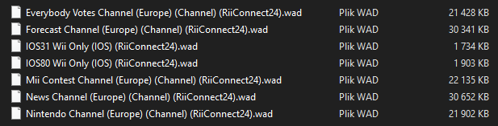
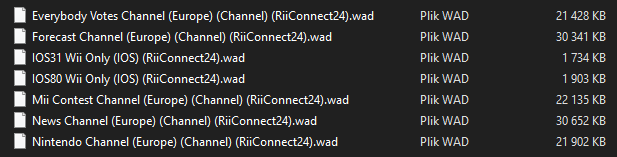

RiiConnect24 for Dolphin

本指南将帮助您在Dolphin上安装RiiConnect24。
如果您需要有关此教程的任何帮助，请直接联系Discord上的KcrPL#4625，加入RiiConnect24 Discord 服务器或向[email protected]发邮件。
This guide is for Dolphin Emulator only.
- Follow this tutorial if you’d like to install RiiConnect24 on a Wii.
- 如果您想在vWii(WiiU上的Wii模式) 安装RiiConnect24，请遵循此教程。
不要在WII MINI上安装RIICONNECT24! 他不会工作，还会使它变砖。 他不会工作，还会使它变砖。
你需要的是
- A computer with either Windows 10 or newer or any Unix-based system
- Dolphin
- RiiConnect24 Patcher
步骤
第一节 - 安装Dolphin
If you have Dolphin already installed, skip to Section II
- Download the latest Dolphin beta version, but not a stable version as these are very outdated!
- Extract the .7z file using a program like 7-Zip or WinRAR.
- Start Dolphin.
- In Dolphin, go to
Tools->Perform Online System Update-> Choose your region.
If you have a homebrewed Wii console, you can use a BootMii NAND dump instead of installing the system files with the System Update option. See this page for more information.
Section II - Installing RiiConnect24
If you use a Windows version before Windows 10, you unfortunately cannot use WiiConnect24 inside Dolphin. You can use this program to run it instead.
- 点击上面的链接以转到修补程序所在的GitHub页面。
- Windows下载
RiiConnect24Patcher.batUnix下载RiiConnect24Patcher.sh - Windows运行
RiiConnect24Patcher.bat。 Unix打开终端并输入bash，然后将RiiConnect24Patcher.sh拖到终端并按回车。 它看起来应该像:bash RiiConnect24Patcher.sh。 - 按1选择”
Start” 然后按ENTER确认选择。 (注意: 这些截图来自Windows修补程序。 ) - For this guide, choose “
Install RiiConnect24 on your Dolphin Emulator”
- 选择”
Express (Recommended)”. 它将为您提供所需的一切。
- 选择区域。

- 当您到这时，RiiConnect24 修补程序可以下载一些不使用RiiConnect24的可选频道。
[X]代表所选的选项。 如果您不感兴趣，按5和ENTER。 
- 完成后，我们希望您花一分钟向我们发送匿名反馈。 如果不想，关闭修补程序。 所有文件都应该已经在您的SD卡上。
 
 - In Dolphin, go to
Toolsand thenInstall WAD. Install all the WAD files one by one. - Unzip AnyGlobe Changer v1.0 and run the boot.dol file. Select your region and save. This will allow the Everybody Votes Channel to work.
Unfortunately, Wii Mail doesn’t work in Dolphin yet.
You will have to launch the Everybody Votes Channel 4 times at most in order for it to start working.